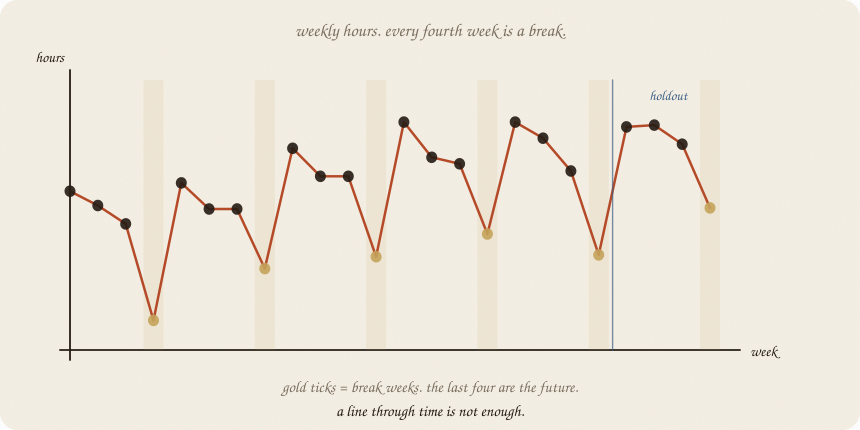
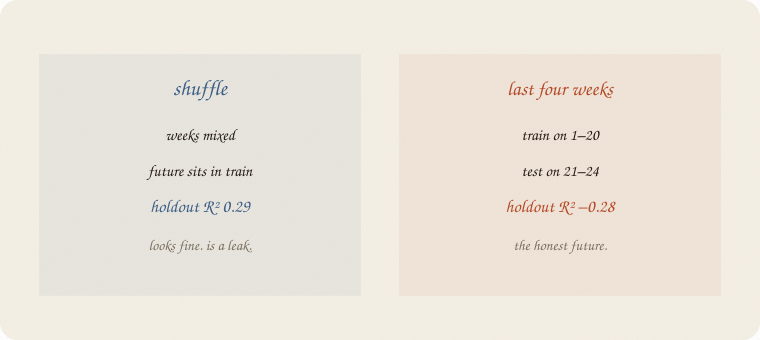
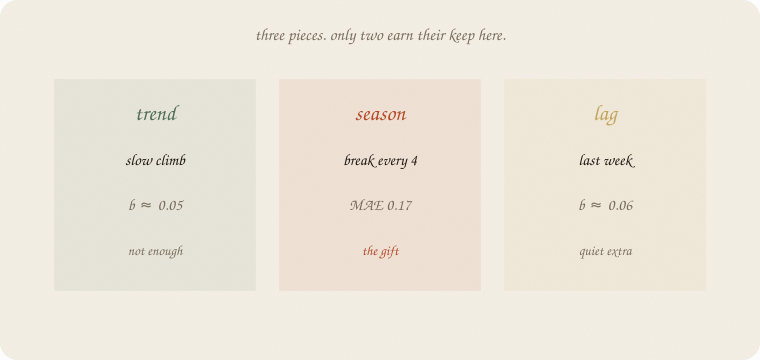
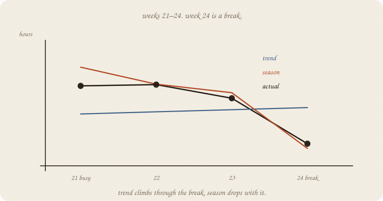
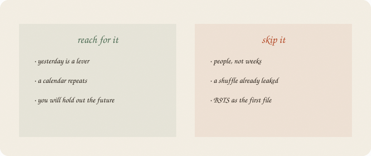

datazines · a sketchbook

Read 01 linear regression first. Same exam world, new object: weekly hours over 24 weeks. Cause (01 confounding) still waits: a campaign in week 20 is later. This notebook is the furniture that campaign would sit on.
Flip it like a notebook. One page = one idea. Done.
Twenty-four weeks. Hours studied, class average.
The cloud is gone. The dots have an order. Week 4 is after week 3. You cannot shuffle them and pretend they are eight people.
Look: a slow climb (the year gets harder). Every fourth week a dip — break week. Last week still smells a little like this week.
Those three names are the whole 01:
Fit a line on week-number only. Two tests.
Shuffle four weeks into a test set (sklearn’s habit). Holdout R² 0.29. Looks like a line.
Last four weeks as the future. Train on 1–20. Holdout R² −0.28. MAE 0.60. The line climbs through a break week it never learned.

The shuffle put a future break into train. That is cheating. Time’s rule:
train on the past. test on later.
People call this a holdout in time. Same humility as R² on new people. The new people are next month.

Trend. ŷ = a + b · week. Here b ≈ 0.05 hours per week. Real, small. Alone it cannot see the dip.
Season. A dummy for week-type (busy / mid / late / break). The break is about −1.4 hours. That is the gift.
Lag. Last week’s hours as an extra x. After season is in, lag’s b is 0.06 — quiet. Yesterday was mostly the calendar repeating, not a leftover echo.
Name all three. Keep what earns the holdout.
Weeks 21–24. Week 24 is a break.

| 21 | 22 | 23 | 24 | MAE | |
|---|---|---|---|---|---|
| actual | 5.08 | 5.11 | 4.79 | 3.72 | — |
| trend only | 4.42 | 4.47 | 4.52 | 4.57 | 0.60 |
| trend + season | 5.52 | 5.12 | 4.92 | 3.61 | 0.17 |
| copy last week | — | — | — | — | 0.89 |
Trend climbs through the break. Season drops with it. Copy-yesterday is worse than a line — week 23 is not a break, week 24 is.
Lag on top: MAE 0.16. A hair. Season already did the work.
If you keep only one thing:
yesterday is a lever. the calendar repeats. test on later.
House seed 7. Last four weeks held out. Trend vs season vs a shuffled cheat.
import numpy as np
from sklearn.linear_model import LinearRegression
from sklearn.model_selection import train_test_split
rng = np.random.default_rng(7)
n = 24
t = np.arange(n, dtype=float)
season = np.array([0.8, 0.4, 0.1, -1.4] * 6)
y = np.zeros(n)
noise = rng.normal(0, 0.25, n)
phi = 0.45
for i in range(n):
base = 3.2 + 0.09 * t[i] + season[i]
lag = 0.0 if i == 0 else (y[i - 1] - (3.2 + 0.09 * t[i - 1] + season[i - 1]))
y[i] = base + phi * lag + noise[i]
print("hours", np.round(y, 2).tolist())
Xtr, ytr = t[:20].reshape(-1, 1), y[:20]
Xte, yte = t[20:].reshape(-1, 1), y[20:]
dummies = np.eye(4)[np.arange(n) % 4][:, :3]
ylag = np.r_[y[0], y[:-1]]
mt = LinearRegression().fit(Xtr, ytr)
print("trend-only b", round(mt.coef_[0], 3),
" train R²", round(mt.score(Xtr, ytr), 2),
" holdout R²", round(mt.score(Xte, yte), 2),
" holdout MAE", round(np.abs(mt.predict(Xte) - yte).mean(), 2))
Xs_tr, Xs_te, ys_tr, ys_te = train_test_split(t.reshape(-1, 1), y, test_size=4, random_state=0)
ms = LinearRegression().fit(Xs_tr, ys_tr)
print("trend shuffled holdout R²", round(ms.score(Xs_te, ys_te), 2),
" MAE", round(np.abs(ms.predict(Xs_te) - ys_te).mean(), 2))
Xts = np.column_stack([t, dummies])
mts = LinearRegression().fit(Xts[:20], y[:20])
print("trend+season holdout R²", round(mts.score(Xts[20:], y[20:]), 2),
" MAE", round(np.abs(mts.predict(Xts[20:]) - y[20:]).mean(), 2))
# lag on the holdout uses the *previous actual* week — one-step-ahead
# after each week arrives. Not a four-week forecast issued at week 20.
Xf = np.column_stack([t, dummies, ylag])
mf = LinearRegression().fit(Xf[:20], y[:20])
print(" + lag holdout R²", round(mf.score(Xf[20:], y[20:]), 2),
" MAE", round(np.abs(mf.predict(Xf[20:]) - y[20:]).mean(), 2),
" lag b", round(mf.coef_[-1], 2))
print("holdout actual", np.round(y[20:], 2))
print("holdout trend ", np.round(mt.predict(Xte), 2))
print("holdout +seas ", np.round(mts.predict(Xts[20:]), 2))
print("naive last-week MAE", round(np.abs(y[19:23] - y[20:]).mean(), 2))
print("week type holdout", (np.arange(n) % 4)[20:].tolist(), "(0=busy … 3=break)")
hours [4.0, 3.76, 3.45, 1.83, 4.14, 3.7, 3.7, 2.7, 4.72, 4.25, 4.25, 2.9, 5.16, 4.57, 4.46, 3.28, 5.16, 4.89, 4.34, 2.93, 5.08, 5.11, 4.79, 3.72]
trend-only b 0.049 train R² 0.11 holdout R² -0.28 holdout MAE 0.6
trend shuffled holdout R² 0.29 MAE 0.48
trend+season holdout R² 0.82 MAE 0.17
+ lag holdout R² 0.85 MAE 0.16 lag b 0.06
holdout actual [5.08 5.11 4.79 3.72]
holdout trend [4.42 4.47 4.52 4.57]
holdout +seas [5.52 5.12 4.92 3.61]
naive last-week MAE 0.89
week type holdout [0, 1, 2, 3] (0=busy … 3=break)
Shuffle looks kinder than the future (0.29 vs −0.28). Season turns the future honest (MAE 0.60 → 0.17) and catches week 24 (3.61 vs actual 3.72). Lag adds a hair — one-step-ahead (each holdout week may use the previous actual). Not a four-week forecast frozen at week 20. Copy-yesterday is the worst baseline on the page.
t[:20] is the past. t[20:] is later. train_test_split is the leak — printed so you can see it lie.
| word | meaning |
|---|---|
| series | dots with an order |
| trend | slow climb or fall |
| season | calendar beat (here: every 4th week) |
| lag | yesterday as x |
| holdout in time | train past, test later |
| leak | shuffle that puts the future in train |

Reach for it when yesterday is a lever, a calendar repeats, and you will hold out the future.
Skip it when the dots are people, not weeks (01 linear regression); a shuffle already leaked; you wanted a campaign (02 causal impact) before you owned trend and season.
Pays you: the time wing’s 01. A season that catches the break. The honest split for every later forecast and for causal impact.
Costs you: lag after season can be a passenger. Four-week dummies assume the calendar you named. A campaign still needs 01 confounding — this 01 only says what the series was going to do.
Time wing, 01. Yesterday is a lever. The gap after a start date: 02 causal impact.
Flip it like a notebook. One page = one idea.